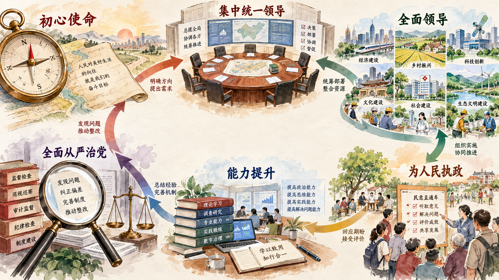

从政治原则到稳定制度
政治原则只有进入组织设置、职责边界、决策程序和执行机制，才能持续发挥作用。党的领导制度体系回答三个相互联系的问题：什么制度在中国特色社会主义制度体系中发挥统领作用，党中央怎样领导重大工作，党的领导怎样落实到各种组织履行职责的全过程。
一、党的领导制度是我国的根本领导制度
教材指出：“中国特色社会主义制度是一个严密完整的科学制度体系，起四梁八柱作用的是根本制度、基本制度、重要制度，其中具有统领地位的是党的领导制度。”统领地位意味着党的领导制度规定各方面制度建设和国家治理的政治方向，并把不同领域的制度安排连接为一个整体。
党的领导制度体系主要包括六个方面：建立不忘初心、牢记使命的制度；完善坚定维护党中央权威和集中统一领导的各项制度；健全党的全面领导制度；健全为人民执政、靠人民执政各项制度；健全提高党的执政能力和领导水平制度；完善全面从严治党制度。六个方面分别提供使命基础、最高原则、主体内容、价值追求、实践能力和组织保证。

二、健全党中央对重大工作的领导体制
重大工作通常跨越多个领域和部门，仅靠单个机构难以完成全局统筹。党中央对重大工作的领导体制，重点解决方向判断、重大关系协调和决策落实问题。教材指出，决策议事协调机构“重点是谋大事、议大事、抓大事”，通过听取各方面意见和建议，更好坚持民主集中制，提高决策科学性。
重大决策从形成到落实，需要完整工作链条。前端包括调查研究、意见汇集、方案比较和集体决策；中端包括任务分工、责任确定和政策转化；后端包括督办落实、定期报告、检查通报、跟踪问效和监督问责。党中央负责重大方向和全局协调，各地区各部门根据职责把决策转化为法律法规、政策政令、工作机制和具体行动。
请示报告制度使重大情况及时进入领导决策，任务分工使责任落到具体部门，督查和反馈使执行中出现的问题能够被发现和纠正。通过这些制度，集中统一领导既表现为方向一致，也表现为信息能够上下贯通、行动能够协调推进。
三、健全党的全面领导制度
健全党的全面领导制度，要使党在各种组织中发挥领导核心作用，同时保证各种组织依法依章程履行职责。人大、政府、政协、监察机关、审判机关、检察机关、人民团体、企事业单位和社会组织具有不同职能，党的领导通过政治领导、组织保障、思想引领和制度机制，使其在共同方向下各就其位、各司其职、各尽其责。
制度建设还要明确党组织的权责和工作方式。党委（党组）着眼全局统筹重大事项，各职能部门负责专业决策和具体执行；党组织不能包揽行政和业务工作，行政领导班子也不能把党的领导同业务工作割裂。制度化、规范化、程序化的意义，就在于使领导主体、职责范围、议事程序和执行方式具有稳定依据。
参考资料｜党委、党组和党委派出机关分别是什么
党委通常指党的地方委员会或者基层委员会，由相应党的代表大会或党员大会选举产生，在本地区、本单位发挥领导核心作用。党委讨论决定职责范围内的重大问题，并向同级党的代表大会负责、报告工作。
党组是党在中央和地方国家机关、人民团体、经济组织、文化组织和其他非党组织的领导机关中设立的领导机构。党组在本单位发挥把方向、管大局、保落实的领导作用，同时支持本单位行政领导班子依法依章程履行职责。党组由批准其设立的党组织决定成立，其成员由批准设立党组的党组织决定。
党委派出机关是党委为加强对特定领域、行业、系统领导而派出的机关，根据规定代表党委领导相应领域、行业或者系统的工作。常见名称中可能出现“工作委员会”，其权责来自派出它的党委和相关党内法规。判断一个机构的性质，不能只看简称，要看设立依据、隶属关系和职责范围。
资料来源：中共中央印发《中国共产党党组工作条例》，2019 年 4 月；中共中央印发《中国共产党工作机关条例》，2025 年 12 月。